Aula 10 - Princípios de Transmissão Confiável de Dados
Diego Passos
Universidade Federal Fluminense
Redes de Computadores I
Material adaptado a partir dos slides originais de J.F Kurose and K.W. Ross.
Revisão da Última Aula...
Camada de transporte:
Comunicação
entre processos
.
Executada nas bordas.
Transmite
segmentos
.
Dois protocolos: TCP, UDP.
Camada de transporte ≠ camada de rede:
Processos
vs.
hosts
.
Modelos de serviço:
TCP: confiável, controle de taxa, conexão.
UDP: não-confiável, sem controle taxa, sem conexão.
Multiplexação:
Segmentos de múltiplos sockets para a camada de rede.
Cabelhos auxiliam demultiplexação.
Demultiplexação:
IPs, # de porta, identificam socket de destino.
UDP: apenas informações do destino.
TCP: quatro componentes.
UDP:
Serviço básico: datagramas perdidos, fora de ordem.
Aplicações que
toleram perda, mas são sensíveis a taxa
.
DNS também.
Checksum
do UDP:
Verificação de erros.
Soma em complemento a 1.
Princípios de Transferência Confiável de Dados
Princípios de Transferência Confiável de Dados
Importante nas camadas de aplicação, transporte e enlace.
Um dos 10 problemas mais importantes em redes de computadores!
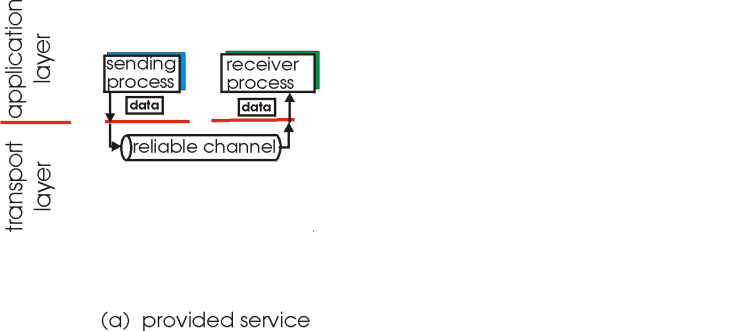
Características do canal não-confiável determinarão complexidade do protocolo de transmissão confiável de dados.
Ou rdt, do inglês
reliable data transfer
.
Princípios de Transferência Confiável de Dados
Importante nas camadas de aplicação, transporte e enlace.
Um dos 10 problemas mais importantes em redes de computadores!
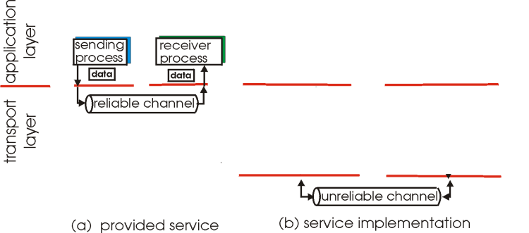
Características do canal não-confiável determinarão complexidade do protocolo de transmissão confiável de dados.
Ou rdt, do inglês
reliable data transfer
.
Princípios de Transferência Confiável de Dados
Importante nas camadas de aplicação, transporte e enlace.
Um dos 10 problemas mais importantes em redes de computadores!
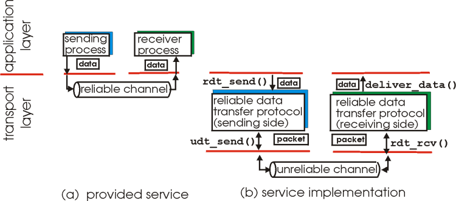
Características do canal não-confiável determinarão complexidade do protocolo de transmissão confiável de dados.
Ou rdt, do inglês
reliable data transfer
.
Transmissão Confiável de Dados: Início (I)
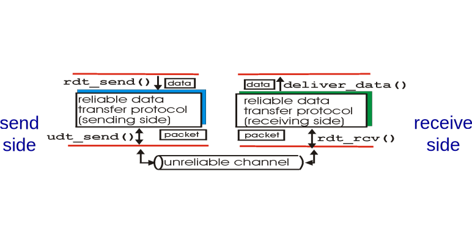
rdt_send():
chamada pela aplicação para enviar dados para o transporte.
udt_send():
chamado pelo transporte para passa pacote para a rede.
rdt_rcv():
chamada quando pacote chega pela rede no lado receptor.
deliver_data():
chamado pelo transporte para entregar dados para aplicação.
Transmissão Confiável de Dados: Início (II)
Nós iremos:
Incrementalmente desenvolver os lados transmissor e receptor de um protocolo rdt.
Consideraremos apenas transmissão unidirecional de dados.
Mas informação de controle trafegará nos dois sentidos!
Usar máquinas de estado para especificar transmissor, receptor.
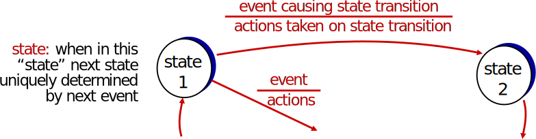
rdt1.0: Transmissão Confiável sobre Canal Confiável
Canal de comunicação (rede) perfeitamente confiável.
Pacotes nunca são perdidos.
Sempre são entregues íntegros.
Máquinas de estado separadas para transmissor, receptor:
Transmissor envia dados pelo canal.
Receptor lê dados a partir do canal.
Transmissor
Receptor
rdt2.0: Canal com Erros de Bit (I)
Canal (rede) pode alterar valor de determinados bits.
Mas pacotes
sempre
são entregues, ainda que
corrompidos
.
Já vimos uma maneira de verificar erros:
checksum
.
Mas a pergunta é: como o protocolo
se recupera dos erros
?
Como humanos se recuperam de “erros” durante uma conversa?
rdt2.0: Canal com Erros de Bit (II)
Canal (rede) pode alterar valor de determinados bits.
Mas pacotes
sempre
são entregues, ainda que
corrompidos
.
Já vimos uma maneira de verificar erros:
checksum
.
Mas a pergunta é: como o protocolo
se recupera dos erros
?
Pacotes de reconhecimento (ACKs):
receptor diz explicitamente ao transmissor que pacote foi recebido corretamente.
Reconhecimento negativo (NAKs):
receptor diz explicitamente ao transmissor que pacote foi recebido com erros.
Transmissor retransmite pacote sempre que receber um NAK.
Novo mecanismo no rdt2.0 (e versões posteriores):
Detecção de erros (via
checksum
).
Retro-alimentação: mensagens de controle (ACK, NAK) do receptor para o transmissor.
rdt2.0: Especificação da Máquina de Estados
Transmissor
Receptor
rdt2.0: Operação Sem Erros (I)
rdt2.0: Operação Sem Erros (II)
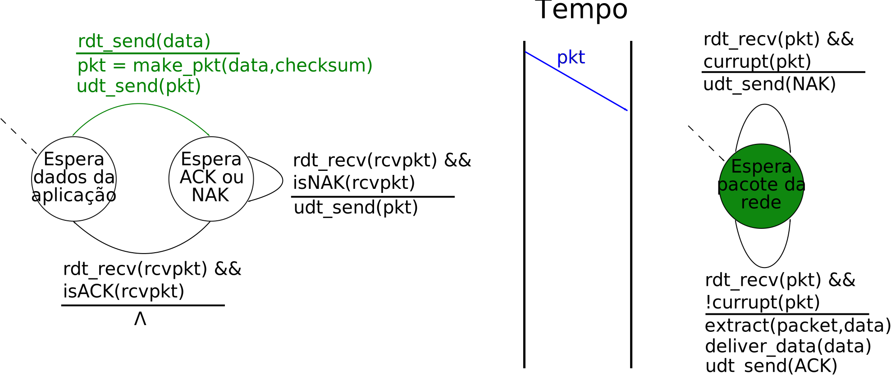
rdt2.0: Operação Sem Erros (III)
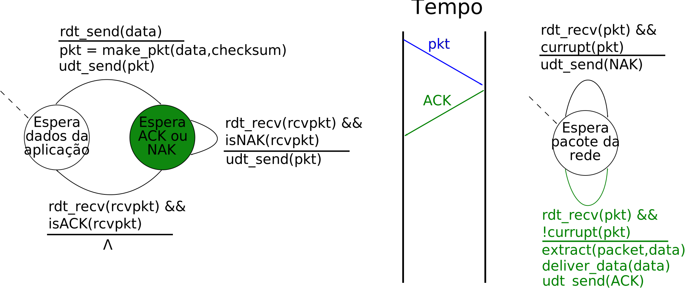
rdt2.0: Operação Sem Erros (IV)
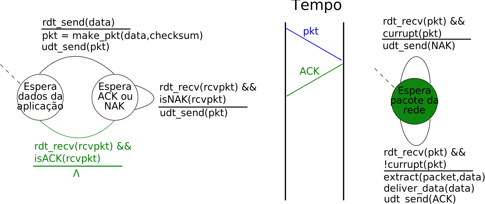
rdt2.0: Operação Sem Erros (V)
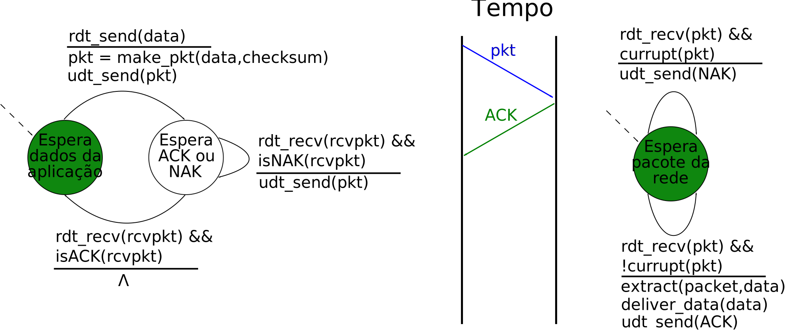
rdt2.0: Operação Com Erros (I)
rdt2.0: Operação Com Erros (II)
rdt2.0: Operação Com Erros (III)
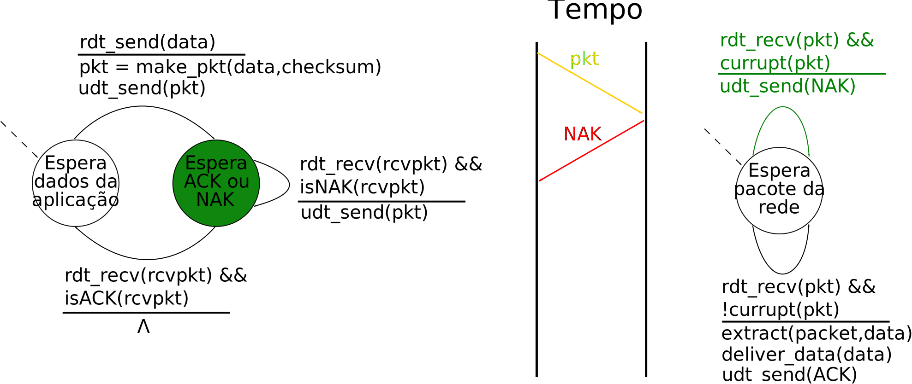
rdt2.0: Operação Com Erros (IV)
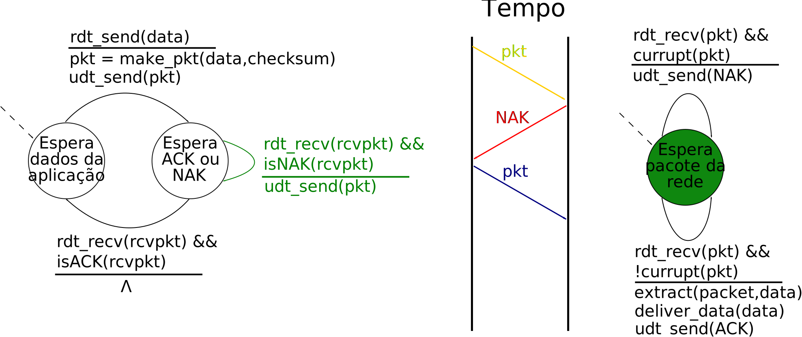
rdt2.0: Operação Com Erros (V)
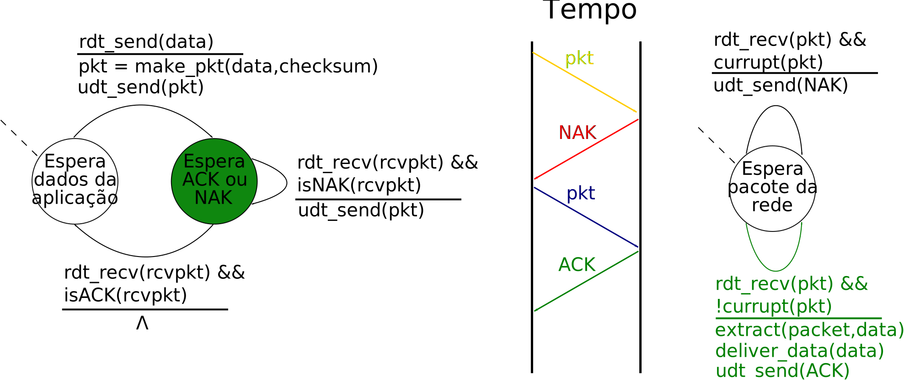
rdt2.0: Operação Com Erros (VI)
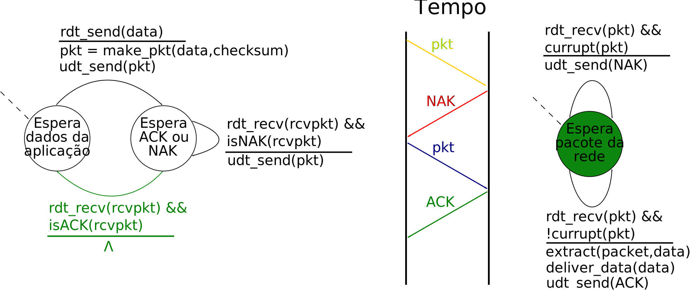
rdt2.0: Operação Com Erros (VII)
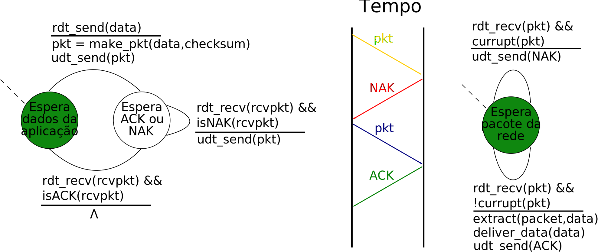
rdt2.0: Uma Falha Fatal!
O que acontece se ACK/NAK são corrompidos?
Transmissor não sabe o que ocorreu no receptor!
Não pode simplesmente retransmitir: pode gerar duplicatas.
Lidando com duplicatas:
Transmissor retransmite pacote atual se ACK/NAK é corrompido.
Transmissor adiciona um
número de sequência
a cada pacote.
Receptor descarta (não entrega à aplicação) pacotes duplicados.
Stop and wait
Transmissor envia um pacote, espera pela resposta antes da próxima transmissão
rdt2.1: Lida com ACK/NAK Corrompido (Transmissor)
rdt2.1: Lida com ACK/NAK Corrompido (Receptor)
rdt2.1: Discussão
Transmissor:
# de sequência adicionado a pacotes.
Dois valores (0 e 1) bastam. Por quê?
Precisa verificar se ACK/NAK recebidos estão corrompidos.
Duas vezes mais estados.
Estado “lembra” se # de sequência esperado é 0 ou 1.
Receptor:
Deve verificar se pacote recebido é duplicado.
Estados indicam se pacote esperado é o 0 ou o 1.
Note: receptor não tem como saber se último ACK/NAK enviado chegou corretamente no transmissor.
rdt2.2: Um Protocolo Sem NAK
Mesma funcionalidade do rdt2.1 usando apenas ACKs.
Ao invés de um NAK, receptor envia
ACK para o último pacote recebido corretamente
.
Receptor precisará incluir no ACK
explicitamente
o # de sequência do pacote reconhecido.
ACK duplicado no receptor resulta nas mesmas ações que um NAK: retransmitir pacote corrente.
rdt2.2: Transmissor
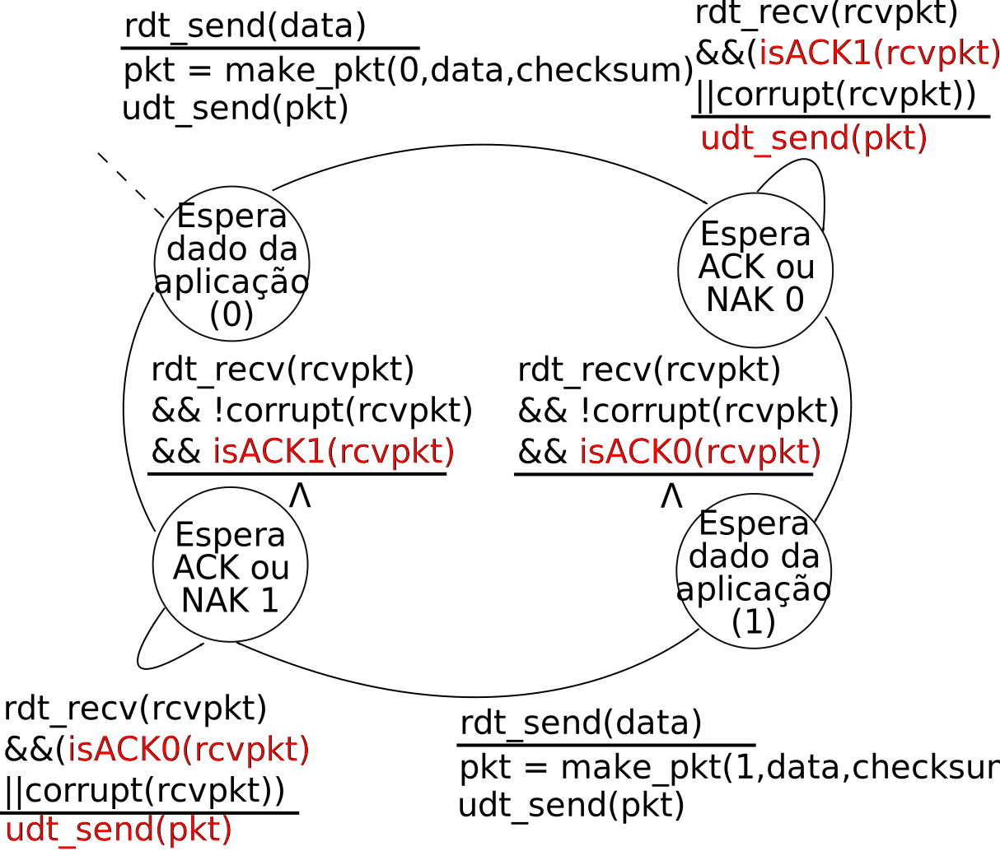
rdt2.2: Receptor
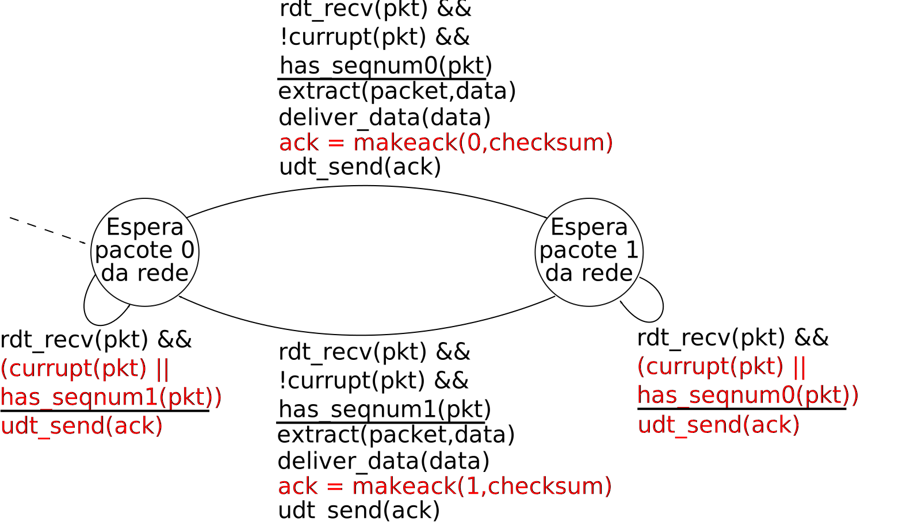
rdt3.0: Canal com Erros e Perdas
Nova hipótese:
Canal (rede) pode também descartar pacotes (tanto dados, quanto ACKs).
Checksum
, # de sequência, ACKs, retransmissões ajudarão... mas não serão suficientes.
Abordagem:
transmissor aguarda ACK por um tempo “razoável”.
Retransmite pacote se ACK não é recebido neste período.
Se o pacote (ou seu ACK) estão simplesmente atrasados (e não perdidos):
Retransmissão será duplicada, mas # de sequência já lida com isso.
Receptor deve especificar # de sequência do pacote sendo reconhecido pelo ACK.
Requer um
temporizador
regressivo.
rdt3.0: Transmissor
rdt3.0 em Ação (I)
rdt3.0 em Ação (II)
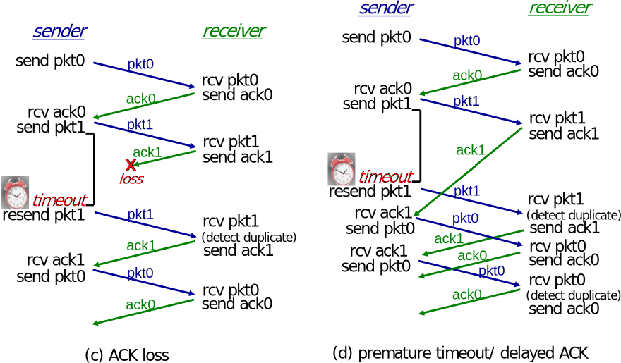
Desempenho do rdt3.0
rdt3.0 funciona, mas desempenho é péssimo.
e.g.
, enlace de 1 Gb/s, com 15 ms de atraso de propagação, pacote de 8000 bits:
\(D_{trans} = \frac{L}{R} = \frac{8000}{10^9} = 8\;\mu s\)
\(U_{sender}\)
:
utilização
— fração do tempo em que transmissor efetivamente usa o canal.
\(U_{sender} = \frac{L/R}{RTT + L/R} = \frac{0{,}008}{30{,}008} = 0{,}00027\)
Se RTT=30 ms, um pacote de 1 KB é enviado a cada 30 ms.
Vazão de 33 kB/s em enlace de 1 Gb/s
Protocolo está limitando o uso dos recursos físicos!
rdt3.0: Operação do Tipo
Stop-and-Wait
\(U_{sender} = \frac{L/R}{RTT + L/R} = \frac{0{,}008}{30{,}008} = 0{,}00027\)
Resumo da Aula...
Transferência confiável de dados:
Garantir entrega.
Garantir integridade.
Garantir ordenação.
Embora a rede não garanta.
Checksum
:
Verificação de integridade.
Pacotes errados são descartados.
ACK:
Confirmação
positiva do recebimento
.
NAK:
Confirmação
negativa do recebimento
.
Retransmissões:
Pacotes perdidos/errados são retransmitidos.
Números de sequência:
Identifica duplicatas.
Duplicatas descartadas.
Dá mais flexibilidade às retransmissões.
Permite supressão dos NAKs:
ACK duplicado = NAK
.
Temporizador:
Necessario se rede descarta pacotes.
Estouro de temporizador interpretado como pacote perdido.
Retransmissão.
Stop-and-wait
:
Novo pacote transmitido apenas após ACK.
Limita desempenho
.
Próxima Aula...
Discutiremos como resolver a ineficiência dos protocolos do tipo
stop-and-wait
.
Protocolos baseados em
pipeline
:
Go-Back-N.
Repetição Seletiva.
Também começaremos a discutir as características básicas do TCP.